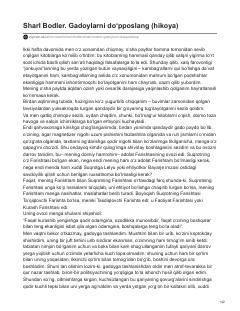

GDIjtimoiy tenglik va insoniy kurash haqidagi o‘tkir falsafiy hikoya.
Ushbu hikoyada muallif ijtimoiy tenglik va xayriya haqidagi nazariyalarni o‘ziga xos, keskin va provokatsion usulda tahlil qiladi. Bosh qahramon gadoy bilan bo‘lgan to‘qnashuv orqali insoniy munosabatlar va kurashning ahamiyati haqidagi falsafiy qarashlarini bayon etadi.